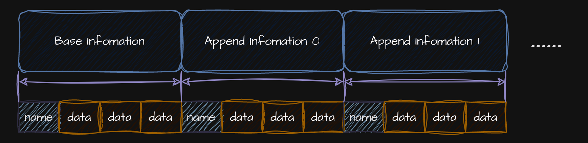

GSoC2024 笔记：使用 Rust 重新实现 procps
procps 是一套用于收集统计系统信息的套件，也指代一套访问 /proc 文件系统的 API。uutils 的 procps 是用 Rust 重新实现的，而这正好是本次 GSoC 的提案内容。
文章总体很长，请使用右侧 TOC 来跳转
free 命令
用于显示系统中已用和未用内存空间
文件系统
free 命令通过访问 /proc/meminfo 假（pseudo）文件系统来获取原始信息
对于一个该假文件系统文件的典型输出为
1 | |
该输出的 kB 单位实际上为 2^10 byte，也就是 1kB = 1024B
解析
解析时应当忽略最后的 kB，实际上解析应当只包含 key 和 value 而不包含末尾的单位
最后的解析结果类型应当是 HashMap<String, u64>
参考文献
tload 命令
tload 命令使用打印终端图形的方式向用户显示系统负载
文件系统
tload 命令使用 /proc/loadavg 作为信息源，该文件典型的内容如下
1 | |
解析
根据内核文档我们可以知道
Load average of last 1, 5 & 15 minutes;
number of processes currently runnable (running or on ready queue); total number of processes in system; last pid created. All fields are separated by one space except “number of processes currently runnable” and “total number of processes in system”, which are separated by a slash (‘/’). Example: 0.61 0.61 0.55 3/828 22084
那么对于以上输出的例子，我们可以认为其意义如下
1 | |
因此我们可以根据如上内容来设计数据结构
1 | |
参考文献
vmstat 命令
slabtop 命令
实时显示内核的 slab 缓存信息
slab 是什么
slab 是一种 Linux 通用的内存分配器，其实现原理和工作原理不是本次 GSoC 的一部分，但可以通过 Kernel Document 获得相关的理论知识
文件系统
slabtop 使用 /proc/slabinfo 作为信息源，典型的输入如下(已作截断，并且已经对齐)
访问该文件需要 root 权限。
1 | |
其中第一行不作解析，声明 slabinfo 的版本
第二行声明每个元素的意义
将该输出换作表格形式后如下
| name | active_objs | num_objs | objsize | objperslab | pagesperslab | tunables | limit | batchcount | sharedfactor | slabdata | active_slabs | num_slabs | sharedavail |
|---|---|---|---|---|---|---|---|---|---|---|---|---|---|
| nf_conntrack_expect | 0 | 0 | 208 | 39 | 2 | tunables | 0 | 0 | 0 | slabdata | 0 | 0 | 0 |
| nf_conntrack | 736 | 736 | 256 | 32 | 2 | tunables | 0 | 0 | 0 | slabdata | 23 | 23 | 0 |
| QIPCRTR | 78 | 78 | 832 | 39 | 8 | tunables | 0 | 0 | 0 | slabdata | 2 | 2 | 0 |
| ovl_inode | 585 | 585 | 720 | 45 | 8 | tunables | 0 | 0 | 0 | slabdata | 13 | 13 | 0 |
| kvm_vcpu | 0 | 0 | 7288 | 4 | 8 | tunables | 0 | 0 | 0 | slabdata | 0 | 0 | 0 |
| x86_emulator | 0 | 0 | 2656 | 12 | 8 | tunables | 0 | 0 | 0 | slabdata | 0 | 0 | 0 |
| fat_inode_cache | 205 | 328 | 792 | 41 | 8 | tunables | 0 | 0 | 0 | slabdata | 8 | 8 | 0 |
解析
根据以上的表格，我们可以发现该文件数据部分的格式实际上依赖第二行的 meta 格式，因此我们可以认为其格式如下

分析 meta
1 | |
最终结论
1 | |
参考文献
slabinfo 迭代记录
slabinfo 文件总共有三个版本
- 1.0 Present throughout the Linux 2.2.x kernel series.
- 1.1 Present in the Linux 2.4.x kernel series.
- 1.2 A format that was briefly present in the Linux 2.5 development series.
- 2.0 Present in Linux 2.6.x kernels up to and including Linux 2.6.9.
- 2.1 The current format, which first appeared in Linux 2.6.10.
当前使用的版本为 2.1，而包含 slabinfo2.1 的内核为 2.6.10，第一次出现已经是接近 20 年前了，并且目前没有出现想要修改 slabinfo 文件的请求，因此认为该文件的内容和格式在较长时间内不会改变
pgrep 命令
通过名称来查找 PID
文件系统
pgrep 命令依赖于 /proc/<PID> 作为输入源，该部分文档见 Kernel Archive
pid 号在程序结束后会被删除。但有些清空 pid 会保留在/proc 文件系统里，这种情况一般是因为僵尸进程。
解析
进程启动时间
pgrep 命令还实现了判断哪个进程最先创建和哪个进程最后创建，这部分功能通过读取 /proc/self/stat 实现。
以空格为分割，该文件的第 21 个元素即为该进程的 start_time（下标从 0 开始）。
但 start_time 并不唯一对应一个进程，因此在对 start_time 排序结束后需要对相同的 start_time 的进程的 pid 进行排序（存疑，但确实如此）。